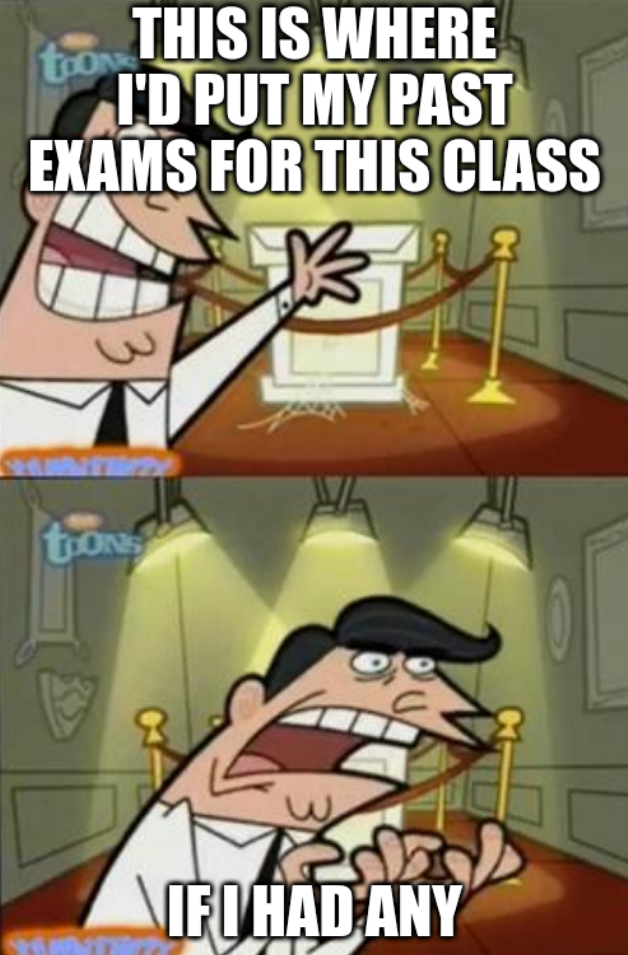

Chapters enumerated with § refer to Calculus 9E by Stewart.
Resources
Week One · January 23
- Monday – Orientation & Recapitulation of Calculus
-
Tuesday – §6.1 Inverse Function and Their Derivatives
-
Wednesday, Thursday – §6.8 Intermediate Forms and l’Hospital’s Rule
Week Two · January 30
-
Monday, Tuesday – §6.2* The Natural Logarithmic Function
-
Wednesday, Thursday – §6.3* The Natural Exponential Function
- Add/drop deadline is February 7
Week Three · February 6
-
Monday, Tuesday – §6.4* General Logarithmic and Exponential Functions
-
Wednesday, Thursday – §6.6 Inverse Trigonometric Functions
Week Four · February 13
-
Tuesday – Reprise of Integration Basics
-
Wednesday, Thursday – Midterm Exam One

Week Five · February 20
-
Monday, Tuesday – §7.1 Integration by Parts
-
Wednesday, Thursday – §7.3 Trigonometric Substitution
Week Six · February 27
-
Monday – §7.2 Trigonometric Integrals
- Video: Trig Integrals @ MIT 2007
-
Tuesday, Wednesday – §7.4 Integration of Rational Functions by Partial Fractions
-
Thursday – §7.5 Strategy for Integration
- Video: Some Basic Recipes @ MIT 1970
- MathSE: List of interesting integrals for early calculus students
- MathSE: Lesser known integration techniques
- MathSE: Integration technique of […] and using the substitution x¯¹↔u
- MathSE: Really advanced techniques of integration (definite or indefinite)
- Video: Researchers thought this was a bug (Borwein integrals), by 3Blue1Brown
Week Seven · March 6
-
Monday – §7.6 Integration Using Tables and Technology, and §7.7 Approximate Integration
-
Tuesday, Wednesday – §7.8 Improper Integrals
-
Thursday – §8.1 Arc Length, and §8.2 Area of a Surface of Revolution
Week Eight · March 13
-
Wednesday, Thursday – Midterm Exam Two
Week Nine · March 20
- Spring Break, No Class
Week Ten · March 27
-
Monday – §9.1 Modelling with Differential Equations
-
Tuesday – §9.2 Direction Fields and Euler’s Method
-
Wednesday, Thursday – §9.3 Separable Equations
- Withdraw deadline is April 10
Week Eleven · April 3
-
Monday – §10.1 Curves Defined by Parametric Equations
-
Thursday – §10.3 Polar Coordinates, and §10.4 Calculus in Polar Coordinates
- Video: Polar Coordinates @ MIT 2007
Week Twelve · April 10
-
Wednesday, Thursday – Midterm Exam Three
Week Thirteen · April 17
-
Monday – §11.1 Sequences
-
Tuesday – §11.2 Series
Week Fourteen · April 24
Week Fifteen · May 1
Week Sixteen · May 8
-
Monday, Tuesday – §11.10 Taylor and Maclaurin Series
- Video: Taylor’s Series @ MIT 2007
- Video: Taylor series, by 3Blue1Brown
-
Wednesday, Thursday – Midterm Exam Four
Final Exam
- Section 001 (1pm Class) – Wednesday May 17 @ 1pm